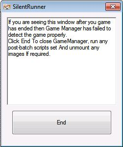
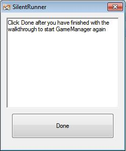
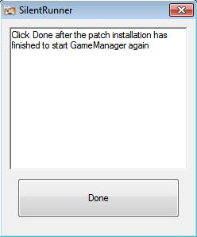

Function
The function of this program is to basically use barely any resources and to sit in background while the user is playing games. Its main function is to detect when a game has finished so images can be unmounted and batch files can be run, and its other function is to take screen shots of games when the global hotkey is pressed.
Interface
It is very rare to notice the interface but it looks like below:

If
it fails to detect that your game is closed then you will see this
window.
Clicking 'End' button manually forces it to run the
designated batch files and unmount images as it would if it had
detected the game closing.
Other Instances of SilentRunner
You may also notice SilentRunner windows when viewing walkthroughs or patches, this is a separate program that's sole purpose is to allow the user to easily reopen FrontEnd, so click on 'Done' to do so.

